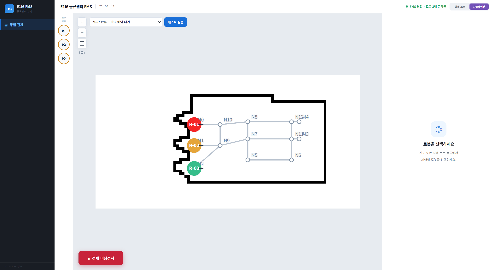

FEATURED CASE STUDY
01 / 02
01
자율주행 물류 로봇
진행 중 · 2026.11 완료 예정
통합 시연 영상
AX Multi-Robot Logistics (LOGITLE)
FMS 관제·AMR 운반·로봇팔 적재·하역 연계 · 24시간 무인 운영을 목표로 개발 중인 물류 자동화 시스템
ROS 2 Jazzy / Nav2
2D ICP / 거리 PD
LiDAR / Odometry
Zenoh / MQTT
판단 모델(KEV)
담당 역할
프로젝트 기획 · 정밀 도킹 구현 · 판단 모델 시험·평가 · 네트워크 구축
1
직접 기획한 물류 출고 자동화
- 다중 로봇 경로 조율·장비 간 인계 프로젝트 기획
- 주문·배차 → 피킹·패킹 이송 → 컨베이어 하역 연계
2
핵심 구현 및 시스템 연동
- LiDAR·ICP 기반 충전 스테이션 정밀 도킹 구현
- 판단 모델(KEV) 평가 및 FMS 연동 시험 참여
- 프로젝트용 로컬 네트워크 구축·운영
3
판단 모델·FMS 연동 및 시뮬레이션
- 판단 모델(KEV) 활용 방식 검토·평가
- 모델 판단 결과와 FMS 점유·예약 처리 연동 시험
- FMS 3대 시뮬레이션 도착·대기 해제 테스트 통과

YouTube VIDEO 01iframe src에 embed 링크 입력
주문 선택·배차부터 경로 예약, AMR 주행·도킹, 로봇팔 적재까지의 팀 시스템 시연

YouTube Pick and Place 시연https://www.youtube.com/embed/0b55mWgf9ew
위치 정렬 후 모방학습된 OMX를 통해 Pick and Place

YouTube FMS 시연https://www.youtube.com/embed/E0810Q3jOZM
FMS 웹 관제: 배차·경로 예약 및 로봇 상태 모니터링
IMPLEMENTATION & VALIDATION
02 / 02
SYSTEM DESIGN
충전 스테이션 정밀 도킹 흐름
1
정합 품질·위치 변화량 기반 이상값 제거
- LiDAR 점군 전처리·V자 도크 모델 ICP 정합
- 정합 품질·위치 변화량 기반 이상값 필터링
- ROS 2 Action 취소·정합 실패 시 안전 정지 처리
2
거리 PD·횡오차 보정 및 상태 제어
- 경유지 접근·각도 정렬 후 정밀 후진
- 거리 PD·횡방향 오차 보정으로 후진 제어
- 근거리 ICP 종료·Odometry 기반 저속 후진·정지
3
주변 모서리 오인식 대응·검증 진행
- 3번 스테이션 주변 모서리의 도크 오인식 확인
- 도크 식별 특징·ROI·접근 전 경유지 정렬 보완 중
- 실기체 통합·판단 모델/FMS 연동 검증 진행 중
구현 기준 · 실측 성과와 구분
코드상 완료 기준 1.5cm
제어 루프 설정 20Hz
실패 시 정지·재획득
FMS 시뮬레이션 ≠ 실기체 장시간 운용 검증

YouTube 도킹 시연https://www.youtube.com/embed/w6acZbyfXTE
도킹 시연

YouTube 모방학습 OMX 시연https://www.youtube.com/embed/zYdqoNL3uJE
모방학습 OMX 시연

PHOTO 02src="assets/logitle_FMS.png"
AMR 상태, 주문, 충전 스테이션 복귀, 테스트 주행 메뉴를 구성한 팀 FMS 관제 화면
02
제24회 임베디드SW경진대회 출품 / 팀 프로젝트
본선 출품 완료
통합 시연 영상
VIP Wearable - 시각장애인 보행 보조 시스템
카메라 기반 장애물 실시간 감지·위험 방향 진동 안내를 결합한 착용형 보조 장치
Raspberry Pi 5
YOLO / ONNX INT8
YOLO26n
OpenCV
Python Shared Memory
담당 역할
Edge AI 담당 · YOLO 파인튜닝·ONNX INT8 배포, OD·SEM 병렬 처리, SharedMemory 프레임 전달 및 판단 로직 구현
1
객체 인식·지형 인식 모델 구성
- 객체 인식·지형 인식 모델 통합
- YOLO 직접 파인튜닝·ONNX INT8 최적화 및 배포
- 객체 인식·지형 인식 프로세스 분리
2
Queue → SharedMemory 구조 전환
- 공통 프레임 버퍼·Value 상태 플래그로 처리 시점 조정
- 전체 파이프라인 약 4 → 12+ FPS, 약 3배 이상 처리량
- 동일 모델·해상도·장비·실행 조건 비교 — 사용자 확인
3
위험 구역·지형 이벤트 판단
- 객체 위치·면적비 누적 1D Danger Map·회피 방향 산출
- 3프레임 연속 방향 확인·4프레임 미감지 시 회피 해제
- 하단 ROI 지형 점유율·이력 필터로 상태 전환 안정화
03
임베디드 분산 통신 제어 / 4인 팀 프로젝트
완료 및 주행 검증
통합 시연 영상
KICK-CAN - CAN 기반 분산 제어 4WD RC카
Bluetooth 조종기·CAN 메인·센서·디스플레이 노드로 차량 전장 구조를 모사한 4WD RC카
STM32H523 / Bare-metal C
CAN / FDCAN
UART RX 상태 머신
Input Capture IRQ
담당 역할
STM32H523 Bare-metal Main Node 담당 · UART 패킷 검증, 차동 PWM, FDCAN 상태 공유·속도/전압 계측
1
UART 수신 상태 머신·FDCAN 처리
- 팀원과 12바이트 규격 협의·0xAA/0xFF·XOR 검증 구현
- Bluetooth 데이터 밀림 대응: DMA → 인터럽트 수신 전환
- FDCAN RX IRQ·자체 원형 버퍼로 메인 루프 처리 분리
2
차동 구동·CAN 하드웨어 디버깅
- 좌우 차동 PWM·장애물 방향별 출력 제한·ADC 전압 계측
- 간헐 CAN 오류 시 오실로스코프 파형·연결 상태 확인
- CAN 접점 보완 후 노드 간 정상 통신 확인
3
휠 엔코더 펄스 노이즈 제외·무신호 타임아웃 처리
- 낮은 펄스 빈도·복잡도 고려, TIM2 Input Capture IRQ 채택
- 100 μs 미만 펄스 간격을 노이즈로 제외
- 500 ms 무신호 시 속도 초기화
04
AI융합로봇 3기 / 4인 팀 프로젝트 · 팀장
완료 및 통합 시연
통합 시연 영상
Guide Dog - 시각장애인 보행 보조 로봇
YOLO 객체 인식·초음파 거리 정보 기반 정지·회피 기능의 4륜 보행 보조 로봇
YOLO26n / OpenCV
STM32F411RE
HC-SR04 Input Capture
UART 양방향 통신
장애물 회피 상태 머신
담당 역할
팀장 · STM32 초음파·모터 제어 펌웨어, Raspberry Pi–MCU UART 연동 및 하드웨어 통합
1
STM32 센서 계측·모터 구동 계층 구현
- HC-SR04 Input Capture 거리 계측·불안정 센서값 필터링
- UART 거리값 송신·수신 명령의 모터 PWM 변환
- 카메라 인식 사각의 근거리 벽·장애물을 초음파로 보완
2
팀 비전 모듈과 MCU 구동 계층 통합
- Raspberry Pi 5 상위 판단 ↔ STM32 센서·구동 계층 분리
- 팀 YOLO·회피 판단과 UART FREE·STOP·회전 명령 연동
- 센서 입력 → 판단 → 모터 동작의 통합 흐름 검증
3
실패 원인을 반영한 2륜 → 4륜 구조 전환
- 초기 2륜 구조의 안정성 한계 분석·팀 요구사항 조정
- 4륜 차동 구동 전환·하드웨어 통합 및 주행 시험
- 팀 객체 인식·손잡이 추종·정지/회피 통합 시연 완료
05
센서 퓨전 & 역진자 제어 / 1인 전담 하드웨어
완료 및 주행 검증
통합 시연 영상
Balancing Robot - 2륜 자기 평형 역진자 로봇
센서 융합·이중 PID 자세 유지·Bluetooth 주행 제어를 결합한 2륜 역진자 로봇
ATmega328P
MPU6050 (1D 칼만 필터)
Dual PID 제어기
KiCad PCB 아트워크
UART Bluetooth
담당 역할
하드웨어 회로 설계, PCB 아트워크(KiCad), MCU 펌웨어 및 이중 PID 균형 제어기 1인 전담
1
센서 융합 기반 기울기 추정 (1D 칼만 필터)
- I2C/TWI 기반 MPU6050 초기화·측정값 보정
- 가속도 노이즈·자이로 드리프트 보완용 1D 칼만 융합
- 추정 기울기 → 균형 PID → 좌우 모터 PWM 연결
2
이중 PID·Bluetooth 원격 튜닝
- 균형(Pitch)·회전(Yaw) PID 출력의 좌우 PWM 합성
- 타이머 PWM·GPIO 방향 신호로 L298N 구동
- HC-05 UART 명령 파싱·Android 앱 주행/게인 조정 연동
3
모터 불감대 보정과 전용 PCB 자체 제작
- 오프셋 기반 모터 불감대 보정
- KiCad 전용 PCB 설계·제작
- 센서·MCU·모터 드라이버 단일 회로 구성
06
스마트 팩토리 산업 자동화 / 팀 프로젝트
완료 및 시연
통합 시연 영상
PLC 자동화 설비 제어 미니프로젝트
리프트·컨베이어 연동 및 층별 보관함 자동 적재 기능의 PLC 물류 시스템
Mitsubishi Q03UDV
GX Works2 · GT Designer3 · MR-J4
래더 다이어그램(Ladder)
승강기 서보 모션 제어
안전 인터록 회로
담당 역할
GX Works2 응용 래더 로직 작성: 창고 층 선택, 적재 램프 제어, Tact Time 측정·평균 계산
1
자동 층 선택 및 적재 시퀀스 로직 구현
- BSFL 비트 시프트로 1~3층 적재 위치 순차 선택
- 적재 공간 여유에 따른 순환·재시작 로직 구성
- 흡착 OFF 시점과 층별 적재 상태 램프 연동
2
이중 코일 충돌·통합 오류 개선
- 2인 래더 코드 통합 시 동일 코일 번호 중복 문제 확인
- 기능별 사용 코일 번호 사전 구분·할당으로 충돌 해결
- 레지스터·HMI 태그 오류는 팀원과 공동 디버깅
3
Tact Time 측정 및 평균 계산
- 설비 시작~종료 시간·동작 횟수 집계
- 누적 시간·횟수 기반 Tact Time 평균 계산
- 연산용·표시용 레지스터 구분·HMI 데이터 연동